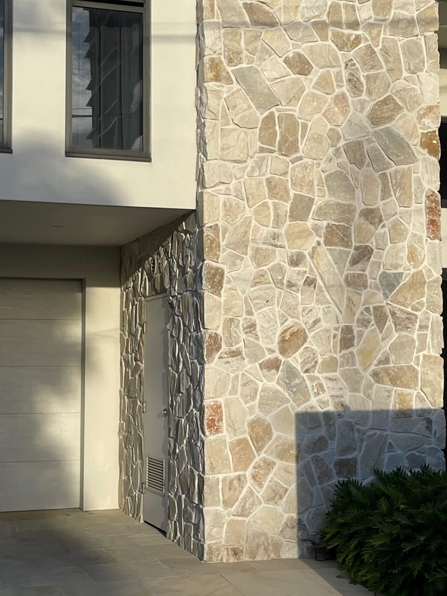

Yayınlanma: 25 Temmuz 2025
Cephe Taş Kaplama ile Isı ve Ses Yalıtımı Nasıl Sağlanır?
Günümüzde yapıların enerji verimliliği ve iç mekan konforu her zamankinden daha önemli hale gelmiştir. Cephe taş kaplama, sadece estetik bir görünüm sağlamakla kalmaz, aynı zamanda binalarda ısı ve ses yalıtımı konusunda da etkili bir çözümdür.
Doğal Taşın Isı Yalıtımına Katkısı
Doğal taş, yüksek yoğunluğu sayesinde sıcaklık geçişlerini yavaşlatır. Bu özellik, yaz aylarında iç mekanın serin kalmasına, kışın ise sıcaklığın içeride tutulmasına yardımcı olur. Böylece enerji tasarrufu sağlanır ve ısıtma-soğutma maliyetleri düşer.
Ses Yalıtımı ile Daha Sessiz Yaşam Alanları
Dış ortamdan gelen trafik, inşaat ya da diğer gürültü kaynakları yaşam kalitesini olumsuz etkileyebilir. Cepheye uygulanan doğal taş kaplama, ses dalgalarını absorbe ederek iç mekanlarda daha sessiz bir ortam sunar.
Hem Fonksiyonel Hem Estetik
Doğal taş kaplama yalnızca teknik faydalar sağlamakla kalmaz, aynı zamanda yapıya prestij ve doğallık kazandırır. Farklı renk, doku ve taş türleri sayesinde her tarza uygun çözümler oluşturulabilir.
Eğer siz de hem dayanıklı hem de enerji dostu bir cephe kaplaması arıyorsanız, doğal taş kaplama ideal bir tercihtir. Bek Stones olarak projelerinize özel çözümler sunmaktan memnuniyet duyarız.